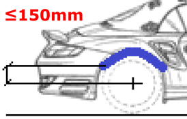
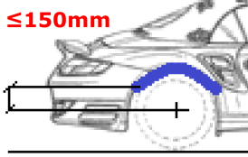

MANUAL DE HOMOLOGACIÓN DE VEHÍCULOS TODOTERRENO
COMPONENTES
Los principales componentes susceptibles de homologación en un vehículo TODOTERRENO y sus requisitos en cuanto a la misma son los siguientes:
BARRA ANTIEMPOTRAMIENTO
La barra anti empotramiento, es un elemento de seguridad pasiva que resguarda la parte trasera del vehículo y sirve para evitar, en caso de colisión, que un vehículo quede enganchado o debajo del vehículo que le precede. Está construido con un material rígido y por su construcción está diseñado para vehículos que se dedican al transporte de mercancías.
La instalación de este dispositivo es necesaria realizarla como consecuencia de alguna reforma que aumente la distancia entre el suelo y el extremo inferior del paragolpes trasero y esta sea mayor a 550mm.
Las dimensiones de la barra anti empotramiento deben cumplir con los requisitos expuestos en el Anexo IV Protección Trasera del RD2822/1998, de 23 de diciembre, por el que se aprueba el Reglamento General de Vehículos, los cuales se resumen en la imagen siguiente:
| DOCUMENTACION NECESARIA |
|---|
| Fotografía de la parte trasera del vehículo midiendo la altura de la barra anti empotramiento y la longitud de la misma |
| Tipo de fijación usada para la instalación (Dimensión, número y tipo de tornillería) |
CABESTRANTE
El cabestrantes un dispositivo mecánico compuesto por un cilindro giratorio impulsado por un motor eléctrico, unido el rodillo a un cable que sirva para arrastrar, levantar o desplazar objetos
Las condiciones necesarias para la homologación de este tipo de componentes son las siguientes:
-
Radios de curvatura del cabestrante (cabestrante, rodillos, enganche…) deben ser inferiores a 5mm. En caso de no cumplirlo deberá disponer de una tapa de protección para cuando el vehículo circule por la vía pública.
-
Utilización de un cabestrante con Certificado de Conformidad CE, donde se indique que dicho cabestrante es conforme a la directiva de máquinas y de compatibilidad electromagnética vigente.
| DOCUMENTACION NECESARIA |
|---|
| Fotografía del cabestrante instalado en el vehículo (frontal y lateral) |
| Certificado de Conformidad CE del cabestrante |
| Tipo de fijación usada para la instalación (Dimensión, número y tipo de tornillería) |
ALETINES
La función de los aletines (guardabarros) es la de proteger de las proyecciones y reducir el riesgo de contacto con las ruedas en movimiento, podrán formar parte de la carrocería o estar instalados como pieza aparte (aletines/guardabarros)
Las condiciones para la homologación de aletines (guardabarros) son las expuestas en la Directiva 1009/2010 de 9 de Noviembre de 2020 sobre los requisitos de homologación de tipo de los guardabarros de determinados vehículos de motor y por el que se aplica el Reglamento (CE) nº 661/2009 del Parlamento Europeo y del Consejo, relativo a los requisitos de homologación de tipo referentes a la seguridad general de los vehículos de motor, sus remolques y sistemas, componentes y unidades técnicas independientes a ellos destinados, las cuales se resumen en:
-
La anchura del aletín debe ser suficiente para cubrir la anchura total del vehículo.
-
Los aletines tienen que cubrir un ángulo de 30º hacia delante dese la vertical por el centro de la rueda, y otro de 50º hacia atrás
-
La distancia de la parte posterior del guardabarros al plano horizontal que pasa por el eje de la rueda será inferior a 150mm
 

- La distancia entre el límite exterior del neumático y el aletín no debe ser mayor que el radio de la rueda.
| DOCUMENTACION NECESARIA |
|---|
| Fotografías del frontal y trasera del vehículo (Ver que las ruedas no sobresalen de los aletines) |
| Fotografías en detalle de los aletines |
| Tipo de fijación usada para la instalación (Dimensión, número y tipo de tornillería) |
SNORKEL
Cuando realizamos vadeos con nuetsro vehículo debemos evitar que el agua llegue al motor a través del filtro del aire y de ahi al sistema de admisión, ya que el agua podría entrar en la cámara de combustión y al no poderse comprimir, doblaría las bielas o las podría incluso expulsar por un costado. Para evitar este problema se utiliza una toma de aire elevada, tambien conocida como snorkel
Debido a que el snorkel toma el aire a la altura del techo, la cantidad de polvo en el aire es menor que el aire al nivel del motor. El aire menos contaminado de polvo, reducirá el desgaste de los componentes del motor y alargará la vida útil de nuestro vehículo
| DOCUMENTACION NECESARIA |
|---|
| Fotografías en detalle del anclaje y enrutado del snorkel (Fotografías generales del snorkel, fotografías del anclaje del snorkel y fotografías del enrutado del snorkel con el capó abierto) |
| Modo de anclaje del snorkel a la carrocería (Tipo y número de tornillería, utilización o no de anclajes originales...) |
| Marca, modelo y referencia del snorkel (En caso de conocerlo) |